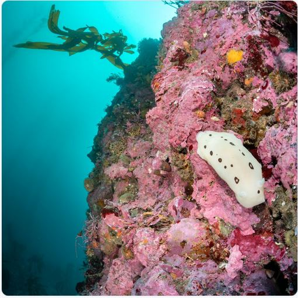

TLDR: Foremostly, I would like to apologize to each near and dear one for my post about overspeeding and especially my careless behaviour. I just want to mention that it is not my habit nor my passion, my only thoughts were only to check once in my life whether this old car of ours has power to please me. Unfortunately my family and children were sitting with me as well. Which is not only dangerous but also something really bad to do infront of children. In essence, thank you all for your concern, dear all and especially those who may look towards me as aspirations, i am really sorry for letting you down and making such a bad act in first place and more sorry for posting it. Keep yourself safe and in service of all humans, plants and animals alike. Be careful and take care of others around you.
